Field UnitQuadruped capture platform for very large buildings
Unitree Go2 X · Jetson Orin Nano Super logger · survey LiDAR · Insta360 X4 360° · forward 4K camera
Purpose: high-precision LiDAR + 360° imaging of very large buildings. Test site #1: 1,000,000 sq ft (≈92,900 m²). Our Unitree Go2 X carries a survey LiDAR, an Insta360 X4 and a forward 4K camera, logged on its own Jetson Orin Nano Super; the data is processed on PRJ-01 Conductor (integration). The SO-101 arm work continues as a later track.
Carrier · Go2 X · 8 kg rated payload · owned
Logger · Jetson Orin Nano Super · PTP master · owned
LiDAR · survey-grade (XT32-class) · TBD by required LOA
360° · Insta360 X4 · 5.7K30 · planned
Forward · 4K camera (global shutter preferred) · TBD
The Unitree Go2 is a 15 kg, 12-motor robot dog that trots, climbs stairs and gets back up after a fall. Ours is the X model; everything we add rides on its back.
Unitree Go2. Same body as our X: 12 joint motors, about 45 N·m each.Up to 3.7 m/s on the X, about a jog.
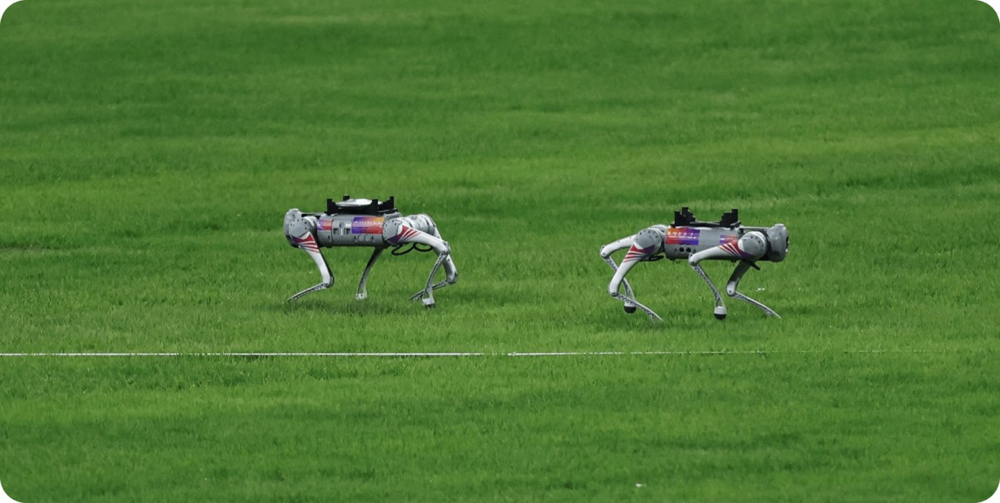
Outdoors on grass, dry ground only (no rain rating).
Photos: Unitree Robotics (unitree.com/go2), shown for identification.
Start here
System overview
Tap a number. Each part gets one plain-English job. Owned means we already have it; To buy is the shopping list; Later is a planned upgrade.
Every part, up close
Component close-ups
Real product photos of every part, with the job each one does on the dog. Tap the lettered dots on the Jetson to see which port connects to what. Tap any photo to enlarge it.
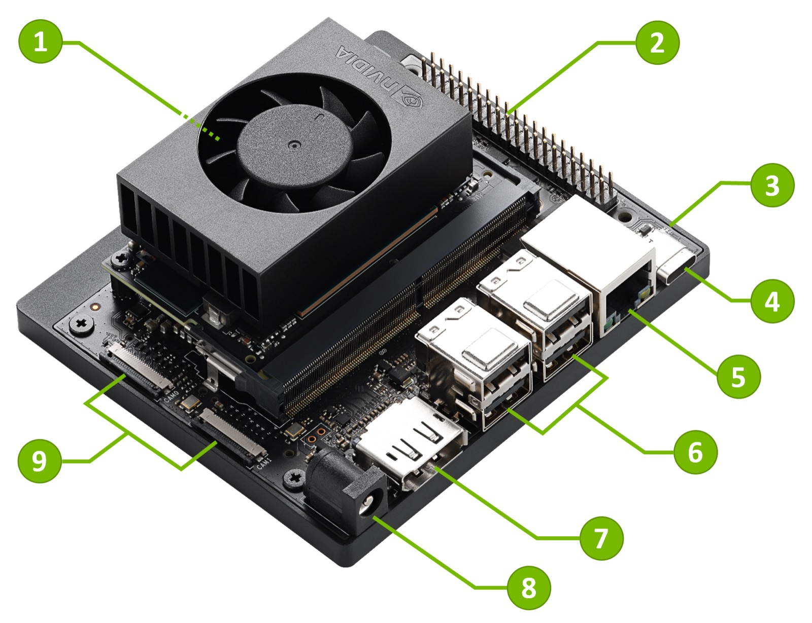
Owned
Jetson Orin Nano Super Developer Kit
67 TOPS, 8 GB shared memory, 7–25 W. The numbers on the photo are NVIDIA's; our lettered dots show what each port does in this build. The M.2 slots for the 1 TB SSD are underneath the board.
Bolts to the deck plate, on standoffs above the power board
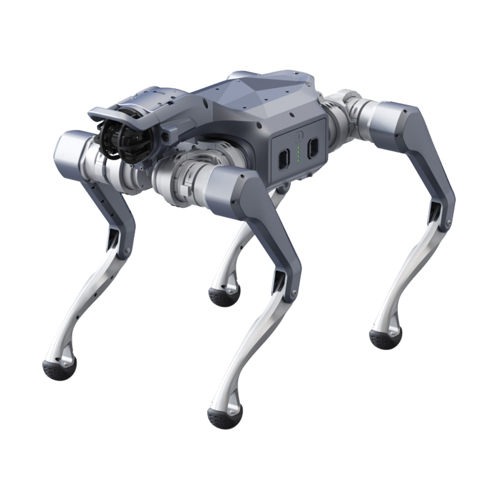
Owned
Go2 X: the back
The flat back is where everything mounts, on the existing M4 holes. The rear Ethernet port sits under most deck plates, so use a flat-edge cable.
The roof rack for every add-on
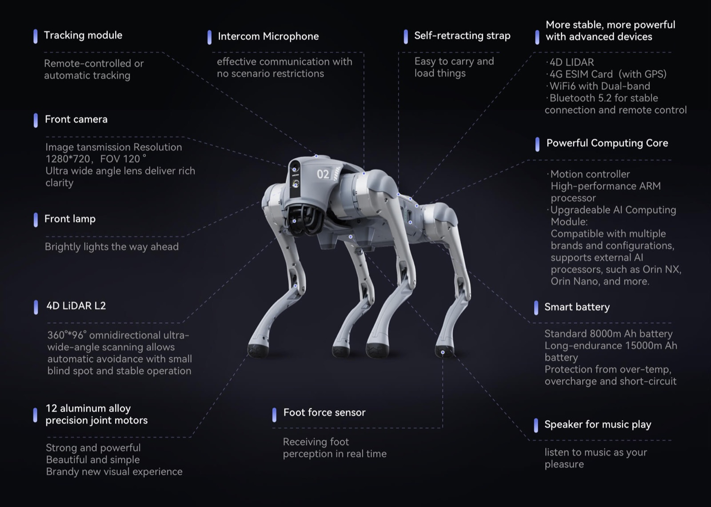
Owned
What's already inside
Unitree's own component map: head LiDAR, front camera, motors, battery and more. Enlarge it to read the labels.
Built in; we don't open the shell (it voids the warranty)
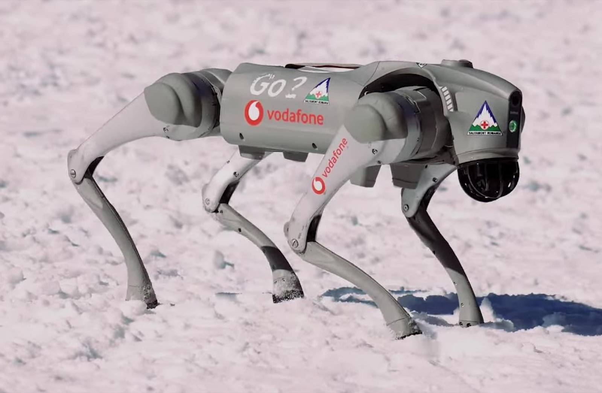
Owned
A Go2 at work
A real Go2 with the Romanian mountain rescue service (Salvamont): same body as ours, outdoors in the cold.
What "field" means for the Field Unit
To buy
Unitree L2 LiDAR
230 g, 360° × 96°, 0.05–30 m, built-in IMU. Unitree's official drawing shows its shape and the axes the mapping software uses.
High at the rear of the deck, ← 12 V buck, → switch
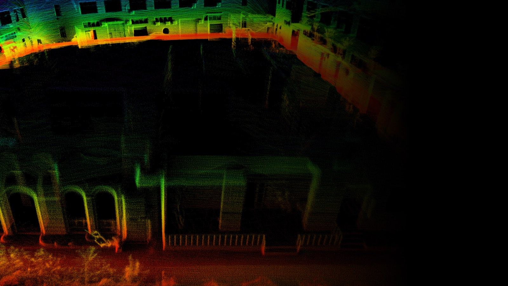
To buy
What the L2 sees
A real L2 scan: every dot is a laser distance, coloured by height. Point-LIO turns these into a map on the Jetson.
Feeds mapping and obstacle avoidance
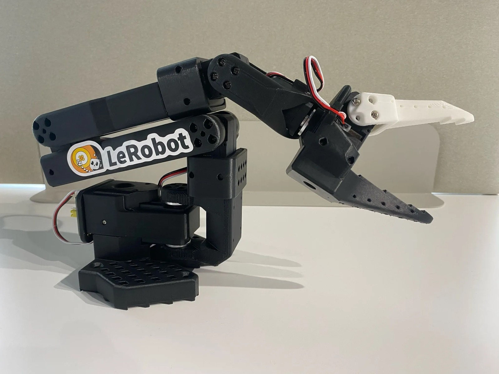
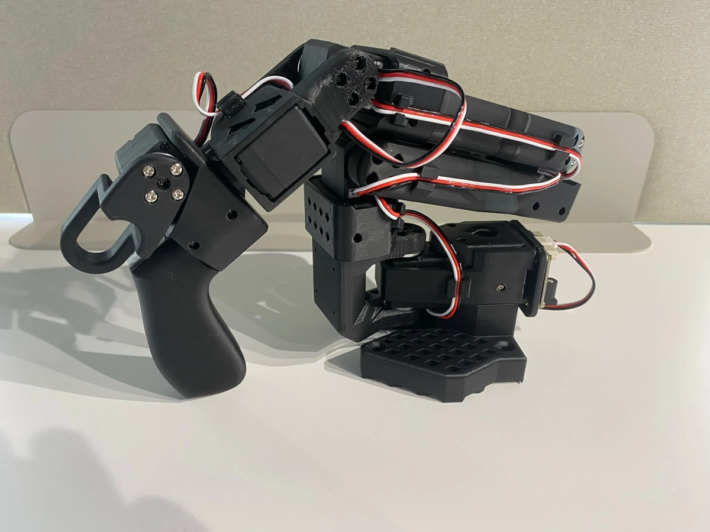
To buy
SO-101: follower + leader
Left, the follower arm that rides on the dog. Right, the leader arm you move by hand to teach it; it records the demonstrations we train on.
Follower → Jetson USB · Leader stays on the desk
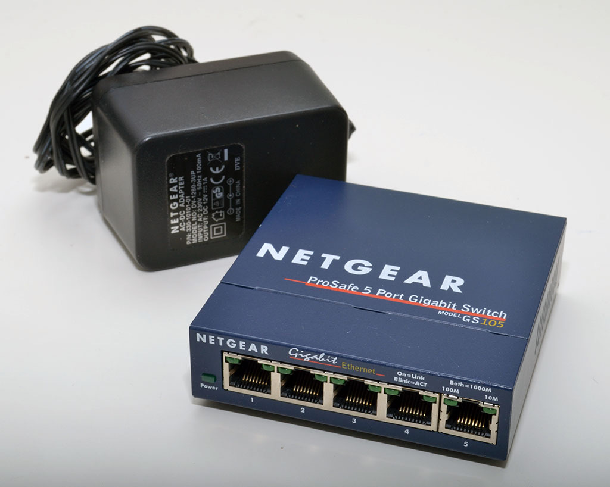
To buy
5-port gigabit switch
Example: a Netgear GS105, which runs on 12 V DC. It joins the Go2's rear port, the Jetson and the L2 on one network.
On the deck, ← 12 V buck
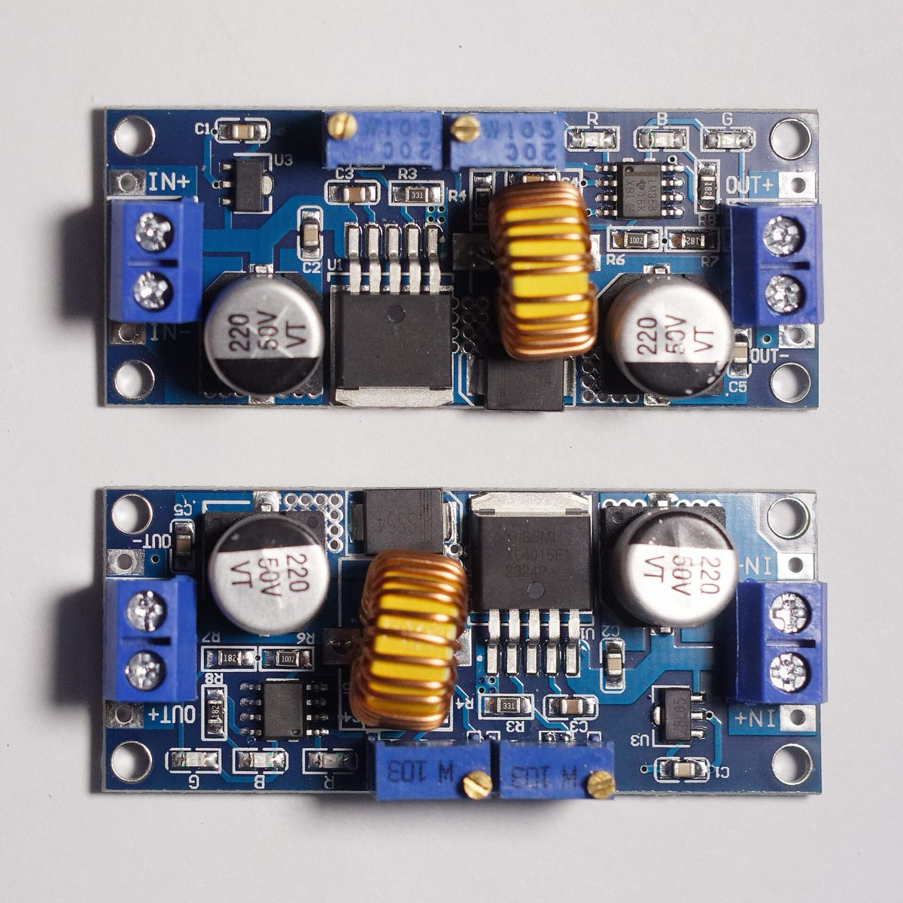
To buy
Buck converters
Example modules: they step the 24 V pack down to 19 V for the Jetson and 12 V for the switch, LiDAR and arm. Size each for its load, and fuse each branch.
Power board, between the battery and every load
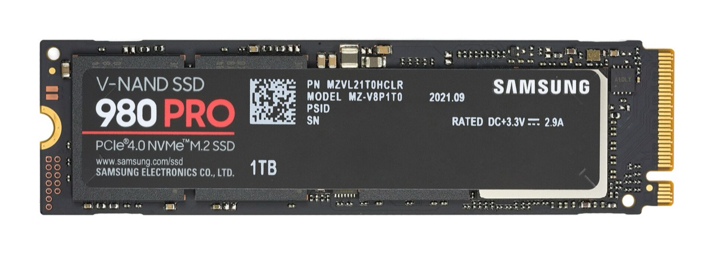
To buy
1 TB NVMe SSD
Example M.2 NVMe drive. The Jetson boots from it instead of a microSD card: faster and far more reliable.
M.2 slot under the Jetson board
Illustration
To buy
24 V accessory battery
A 6S Li-ion or 8S LiFePO4 pack of about 200 Wh, with a main fuse and a latching red e-stop right after it. It powers every add-on, so the dog's own battery only moves the legs.
Low and centred on the deck, between the hips
Illustration
Later
USB-CAN adapter
Only needed for the PiPER upgrade: the PiPER takes its commands over CAN, and this turns one Jetson USB port into a CAN bus.
Jetson USB → PiPER control cable
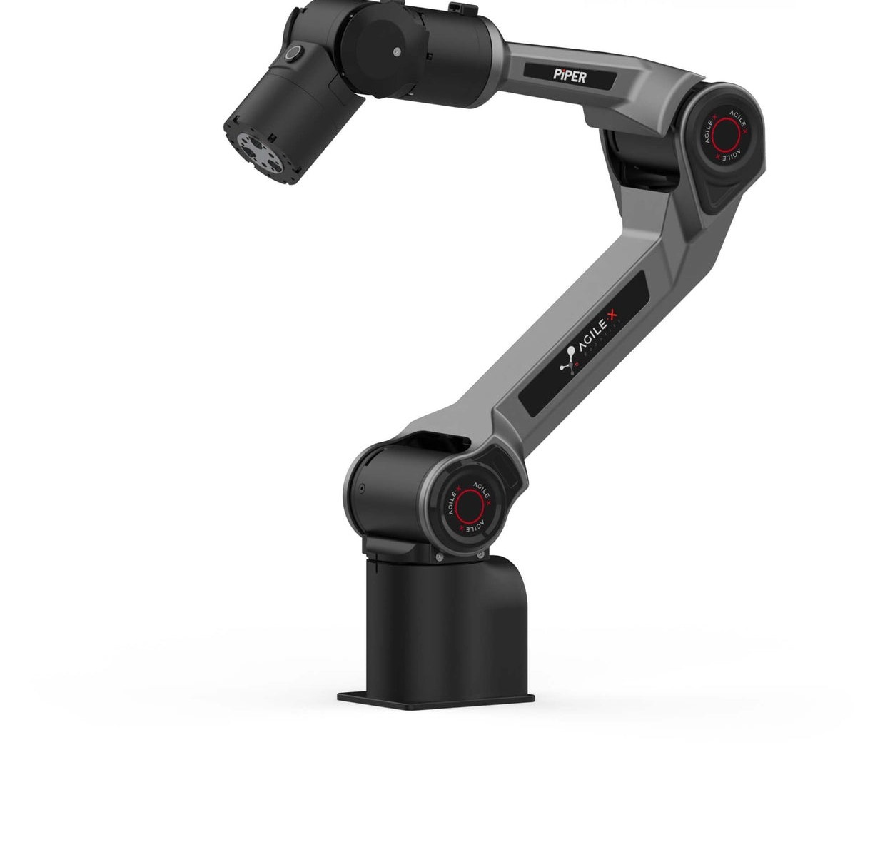
Later
AgileX PiPER
The upgrade arm: 4.2 kg, lifts 1.5 kg, 24 V, CAN. Only if the weighed payload leaves room.
Front of the deck, ← 24 V direct, fused
Photos: NVIDIA (docs.nvidia.com); Unitree Robotics (unitree.com, unilidar_sdk2); TheRobotStudio (SO-ARM100); AgileX Robotics; Wikimedia Commons: HotNews Romania (CC BY 3.0), Photeka (CC BY-SA 3.0), Retired electrician (CC0), D-Kuru (CC BY-SA 4.0). Switch, buck and SSD photos are examples of the part type, not specific purchases. Illustrations are labelled.
By the numbers
Key specifications
15kgThe robot
Go2 X body, about the weight of a beagle.
1.0M sq ftTest site #1
≈92,900 m², ≈22 km capture route incl. overhead est.
8kgRated payload
12 kg max. Capture kit ≈2.2–3.5 kg est.
67TOPS on board
Jetson Orin Nano Super in its 25 W Super mode.
LOA20Building-wide target
15–50 mm with a survey control network est. Client LOA: TBD.
1.3–1.8TBRaw data, site #1
X4 5.7K + 4K + LiDAR over ≈13.5 h of capture est.
2–4hWith the big battery
Unitree's rating for the 15 Ah pack (1–2 h on the stock 8 Ah).
5–6Field days
2-person crew, 7–10 battery missions, 30–45 SLAM segments est.
Mission · Building #1
Mission: Building #1 capture plan
Capture 1,000,000 sq ft (≈92,900 m²) with the Go2 X carrying a survey LiDAR, an Insta360 X4 and a forward 4K camera, logged on the Jetson. Accuracy comes from a survey control network, not from the robot; schedule is set by battery swaps and a camera-safe 0.5 m/s walk. Figures marked est. are planning estimates until the pilot day measures them.
AAccuracy target: USIBD Level of Accuracy
Clients specify accuracy in USIBD LOA bands (spec v3.1, Jan 2025). Band edges below are from secondary academic sources and must be checked against the spec text, including 1σ vs 2σ, before they go into a contract. Vendor scanner specs are 1σ local figures.
Band
Range
Typical use
LOA10
>50 mm
Massing, rough layout
LOA20
15–50 mm
Scan-to-BIM (common); realistic building-wide target for this kit
LOA30
5–15 mm
Scan-to-BIM (common); needs survey payload + dense control
LOA40
1–5 mm
Static terrestrial scanning (TLS) in critical rooms
LOA50
0–1 mm
Specialist metrology
DecisionRequired LOA for client deliverable: TBD. State it as measured vs represented, 1σ vs 2σ, and local vs building-wide. It sets the LiDAR, the control density and whether a TLS or wearable subcontract is needed.
Why control matters: open-loop LiDAR odometry drifts about 0.1–1% of distance (est.); the base-case route is ≈22 km. In the Hilti 2023 benchmark the best single sessions reached 1.2–3.3 cm RMSE, but the best automatic multi-session merge was ≈0.29 m. Every session boundary must be bridged by shared surveyed targets.
Sensor route
Stated accuracy
Weight
Price
Building-wide on a Go2 with control (est.)
Unitree L2 (head LiDAR / build-plan add-on)
≤2.0 cm · 64k pts/s · 30 m
230 g
$419
LOA10–20: navigation and coverage grade
Livox Mid-360
≤2 cm 1σ @10 m · 200k pts/s
265 g
not researched
LOA20
Hesai XT32
0.5 cm 1σ precision · ±1 cm
~0.8–1 kg (unverified)
not researched
LOA20; LOA30 possible locally
XGRIDS K1 / L2 Pro
±1.2 cm rel. / 1 cm rel., 3 cm abs.
<1 kg / ~1.7 kg
~$13,700 / ~$35,000
LOA20
Leica BLK ARC
±10 mm indoor 1σ · 25 m
690 g
~$50–70k (unverified)
LOA20 to borderline LOA30
Emesent Hovermap ST-X
±10 mm indoor · 300 m
1.57 kg + battery
$70,310 bundle
LOA20 to borderline LOA30
FARO Orbis
~5 mm mobile
3.6 kg
quote
LOA30 with dense control
Static TLS (RTC360, Focus, X7)
mm-level
tripod, not dog
quote
LOA40 in critical rooms
No source documents a commercial scanner on a Unitree Go2 or B2, and no Go2 rig has been measured against LOA. Client-facing accuracy must come from our own held-out checkpoints on building #1.
BCapture rig layout
LiDAR and the global-shutter camera share one rigid front bracket so their calibration stays fixed; Jetson, accessory battery and DC-DC sit low between the hips; the X4 rides a 25–40 cm rear mast, lenses parallel to the mast so the stitch hides it. The head L2 stays as the navigation sensor.
Capture rig layout on the Go2 X, side view. Layout and mass are planning estimates from the scanning report; the front LiDAR will appear in the lower-forward part of the 360 frame.
CMission segmentation
Two layers of one plan: battery missions sized by endurance, SLAM segments sized by drift. Every segment starts and ends on a surveyed target. Swaps happen only at a segment end, on a target.
L0 · Site
Building footprint
1,000,000 sq ft ≈ 92,900 m². ≈22 km route incl. 30% overhead (est.). One floor = its own set of missions.
L1 · Zones
7–10 battery missions
One 15 Ah pack ≈1.75–2.25 h under payload (est.) ≈ one zone of 10,000–15,000 m². One pack = one X4 battery = one mission.
L2 · Tiles
4–5 tiles per mission
50 × 50 m tiles. 30–45 segments in total, inside the 25–50 range the SLAM research sizes by drift (est.).
L3 · Segment
15–20 min SLAM segment
Start on target → loop every 100–200 m → end on target. ≥2 shared targets and 10–20 m overlap with neighbours. Targets ≈30 m apart (est.).
Control network (est.): closed total-station traverses; LiDAR-reflective or checkerboard targets every ≈30 m on primary aisles, at every segment start/end, in every overlap and on every stair landing; ≈150–200 targets per floor-equivalent; ≈20% held out as checkpoints. Surveyor quote needed; run the traverse a day ahead of the robot.
DField operations
Item
Plan
Basis
Field days
5–6 days base · 2–3 open warehouse · 10–11 office/hospital
est.; quote the client 5–10 days until the pilot measures m²/h
Crew
2 people: pilot + spotter (doors, swaps, cards, QC), plus facility escort
ops research
Speed
0.5 m/s (≈0.3 m/s in dim zones) · ≈7,600 m²/h net
est.; slower than 1.3 m/s human capture because of gait bob
Daily output
3.5–4.5 h net capture · 2.5–3 missions/day
est.
Robot power
3 × 15 Ah packs + 2 × 9 A chargers · 8 Ah as spare
9 A charger ≈1.5 h per pack vs ≈4 h on 3.5 A; power-down swap 3–5 min (est.)
Insta360 X4
5.7K30 High · shutter ≤1/120 s · FlowState off / keep .insv gyro · 4–5 batteries · V30 512 GB–1 TB cards · airflow
≈135 min at 5.7K vs 71–75 min at 8K; 8K overheated ≈30 min indoors (user report)
Lighting
All high-bay lights on; no on-robot LED (flares in 360 frame)
ops research
Autonomy
Teleop for production; pilot Nav2 waypoints only in mapped zones
X SDK access "partial"; doors and lifts need a person
Connectivity
Offline-first: handheld controller 20–40 m (est.); one 5 GHz tripod router per zone for FPV; never stream 360 live; 4G unusable indoors
ops research
Operator in shot
Pilot 15–25 m back or leapfrog into cross-aisles; mask in post
ops research
Floors
Carry the dog between floors; stairwells as hand-carried segments; lifts are session boundaries
≈16 cm max step vs 17–18 cm commercial risers
Safety
Site risk assessment (ISO 3691-4 spirit) · forklift-free windows · insurance certificate naming the client · no wet or unconditioned bays (5–35 °C, no IP rating)
ops research
Client security
Air-gapped: 4G SIM out, Bluetooth off, never join client Wi-Fi, log only to our Jetson; one-page security statement for client IT. Expect refusals at federal, defence, critical-infrastructure sites
2.3–3.7 B pts @10 mm · 9–15 B @5 mm · 30–130 GB LAZ @5 mm (est.)
Record LiDAR as raw packets: decoded XT32 point clouds swell to ≈70–75 GB/h. For reference, NavVis's purpose-built system records 15–34 GB/h; 360 video dominates this kit's footprint.
Mission · Processing
Mission: processing on Conductor, verdict and open decisions
Field Unit captures; PRJ-01 Conductor processes. Conductor can process the job once the cloud is split into tiles. Its real limits are 16 GB of VRAM and the lack of a Linux Insta360 stitcher, not CPU or disk.
FProcessing pipeline
01Ingest + checksumMCAP bags, .insv, camera files, control coordinatesStorage: 4.5–9 TB/project
02SLAM per segmentGLIM (CUDA) or FAST-LIO2 / Point-LIO + hierarchical bundle adjustmentGLIM CUDA on Blackwell: verify
03Merge + register to controlGLIM offline viewer merge; CloudCompare or Cyclone REGISTER 360 PLUS
05Stitch 360 + extract frames1–2 fps framesNo Linux Studio: Media SDK application1 × NVDEC
06ColouriseProject frames along the SLAM trajectory with estimated time offsets (custom Python/Open3D)
07 · gateQA/QCResiduals on held-out checkpoints, reported by LOA at the contract's confidence level. No zone ships until it passes
08DeliverablesE57 / LAS / LAZ / RCP, Potree viewer, 360 tour; 3DGS and BIM only if soldVRAM 16 GB: splats in 20–45 blocks
Conductor resource
Requirement
Status
CPU · EPYC 9175F 16C
NavVis ≥8 cores; XGRIDS 16 cores
Meets
RAM · 128 GB
NavVis 128 GB; Leica 64–256 GB; LCC 128 GB for ≤60 min captures. CloudCompare ≈32 M coloured pts/GB, ≈2 B pts per cloud cap
Meets; work per zone tile (0.2–1.5 B pts). 256 GB upgrade worthwhile
VRAM · 16 GB (RTX 5070 Ti)
XGRIDS LCC minimum RTX 3090 24 GB; naive 3DGS OOM above ≈11 M Gaussians even on 24 GB
Bottleneck: train splats as ≈20–45 blocks of 2,000–5,000 m², ≈10–70 GPU-h (est.), or cloud GPUs
Video decode
8K 360 decode
One NVDEC (8K75): one stream at a time; run 4K decodes on CPU
Storage · 15.36 TB NVMe
4.5–9 TB working set per project (est.)
One active project, no backup room: add 40–60 TB NAS on 10 GbE
GPlatform-fit verdict
First full capture: a person with a wearable
NavVis VLX 3: 5 mm local, handles stairs and doors, one operator, 100k–300k sq ft per day. On a per-person basis the dog's base case (≈85–100k sq ft per person-day, est.) at best matches one wearable operator's calendar time with twice the crew, and only in warehouse-class geometry.
Where the Go2 earns its place: repeat captures
Weekly progress capture, BIM comparison and areas people shouldn't walk, on a surveyed control network that makes each later visit a cheap repeat run. Building #1 should deliver LOA20 point clouds + 360 tours and a measured baseline (Wh/km, m²/h, checkpoint residuals). Do not promise building-wide LOA30 from the dog alone.
Insurance, not defeat
Commercial scanning runs $0.20–$0.70 per sq ft, so this building is a six-figure job. Renting a wearable or subcontracting TLS for stairwells and LOA30 rooms is cheap insurance. BIMstream's mix on 1–2M sq ft buildings was ≈70% wearable, 15% TLS, 15% handheld.
Have a wearable fallback ready if the client refuses a Unitree robot.
HOpen decisions
#
Decision
Why it matters
Owner
Status
D1
Required LOA (measured vs represented, 1σ vs 2σ, local vs building-wide)
Sets LiDAR, control density, TLS/wearable subcontract, what can be promised
Build team
Open
D2
Deliverables: 360 tour, point cloud, BIM, splats
Drives camera choice, processing hours, VRAM workarounds
Build team
Open
D3
Building facts: floors, stairs, lifts, racking pitch, lighting, forklift schedule, temperature
Moves the schedule between 2–3 and 10–11 days
Build team
Open
D4
Client acceptance of a Unitree robot + air-gapped posture
Source: Building #1 capture: large-building scanning (research report, 18 Nov 2026) and its notes. Every number except the physics of drift is a planning estimate until the pilot day and the client's written LOA.
The decisions · Nov 18
Decision record
We already own the robot and the computer. The open questions were how to treat the X, which LiDAR to add and which arm to start with.
✓ Decided
Robot: Go2 X + our own Jetson
Go2 X + Orin Nano Superown both · $0 more
Buy a Go2 EDU Plus$13,105–13,205 at US dealers
The EDU adds a built-in Orin NX dock, foot sensors and full SDK access. We already have the X, so we add our own computer and battery. The catch: Unitree rates the X's developer access as only "partial", which build-day step 1 tests.
To buy
LiDAR: Unitree L2
Unitree L2$419 · 230 g · built-in IMU
Hesai XT16~$2,000–3,300 · ~800 g
Velodyne VLP-16~$300–500 used · 830 g · discontinued
The L2 is light, cheap, sees from 5 cm and has the motion sensor that mapping needs on a walking robot. The XT16 is the upgrade for 30 m+ outdoor maps. The VLP-16 stopped production in 2025, is blind within about 0.9 m and has no IMU.
To buy
Arm: SO-101 first, PiPER later
SO-101$440–530 · under 1 kg · USB
AgileX PiPER~$2k–3.5k arm-only · 4.2 kg
Unitree D1$4,459–5,400 · ~2.4 kg
Start cheap and light: the SO-101 plugs into the Jetson by USB and works with LeRobot. Move to the PiPER (1.5 kg payload) only if weight allows. Skip the D1: about 10 Hz control, overheating reports, EDU-only.
Proof it can be done
Reference builds: quadrupeds with arms
Nobody has published a Go2 X build like ours yet, but research labs and AgileX have put arms on the Go2. These are the setups our plan copies from.
Go2 + AgileX PiPERAgileX's mobile-manipulation demo: the arm we plan to move up to later (4.2 kg, lifts 1.5 kg).
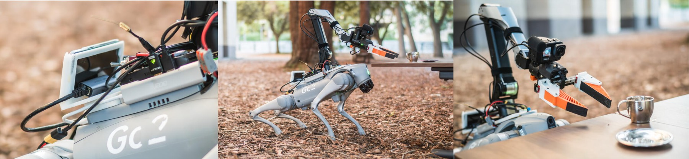
UMI on Legs (Stanford / Columbia)A Go2 with a 3.4 kg arm doing real tasks. Its leg motors overheated in 5–10 minutes, which is why we start light.SO-101 (our first arm)Open-source, under 1 kg, $440–530, plugs into the Jetson over USB and works with LeRobot.
Pick, lift, drop.
The first job we'll teach it. We drive the arm by hand with the matching leader arm to record about 50 examples, train a small model on the workstation's GPU, then let the Jetson run it on the dog.
Animation is illustrative. Expected success on narrow tasks: about 40–70% after 1–3 months (research report).
Photos: AgileX Robotics; UMI on Legs project (umi-on-legs.github.io); TheRobotStudio SO-ARM100 (open source). Shown for identification.
Assembly · scroll to build
Deck assembly sequence
Scroll and the add-ons land on the dog's back in build order. Heavy parts sit low and between the hips; the LiDAR goes high at the rear, the arm at the front.
Bare Go2 XOwned. 15 kg, 12 motors, 8 kg payload rating. Nothing on its back yet.0%
Interactive
Payload and power calculator
Tick the parts to put on the dog. The bars show weight against the 8 kg rated payload and how long each battery lasts. All runtimes are estimates from the research, not measurements.
Weight on the dog0 kg
08 kg rated ▲12 kg max
Add-on power draw est.0 W
Main battery in the dog
–walking on the main battery est.
–add-ons on the 200 Wh accessory battery est.
Assumes ~190 W for walking (arXiv 2509.01765, read as amps), 90% usable energy, add-ons on their own battery. Carried weight will cut walking time further; nobody has published a measured figure.
Power budget, load by load est.
Each bar starts where the last one ends, so you can see what eats the accessory battery. It updates as you tick parts above.
Gauges est.
Walking time doesn't yet account for the weight carried; heavier loads will shorten it.
The brain
Compute: Jetson Orin Nano Super
A credit-card-sized NVIDIA computer that rides on the dog's back. It handles everything that must keep working if Wi-Fi drops. Anything heavy goes home to the Conductor's RTX 5070 Ti.
67TOPS in Super mode (JetPack 6.2)
8 GBmemory, shared by CPU and GPU
6Arm CPU cores + 1,024 GPU cores
7–25 Wpower, fed by a 19 V barrel plug
Dev kit list price rose from $249 to $399 in July 2026. No hardware video encoder, so camera streaming costs CPU: keep it to ~640×480 at 15 fps.
On the dog · Jetson
Talks to the robot (Unitree SDK or Wi-Fi driver)
Watchdog: stops the dog if commands stop arriving
LiDAR driver + Point-LIO / FAST-LIO2 mapping
Nav2 local planner + collision monitor
Arm driver + arm emergency stop
Small camera stream
Wi-Fi · Zenohown subnet
At home · RTX 5070 Ti
Arm AI models (SmolVLA, then π0.5)
Language and vision-language planner
Open-vocabulary detection, SAM, grasp planning
Big map and loop closure
Training (LeRobot, Isaac Lab) and data logs
One loop, start to finish
Data flow: LiDAR to locomotion
Follow one trip around the system: the LiDAR measures the room, the Jetson builds the map, Wi-Fi carries a summary home, the workstation decides, and the dog moves. Anything safety-related never leaves the dog.
1 / 8The L2 spins and measures distances all around the dog.
Power & network map
Power and network wiring
The add-ons get their own battery and talk to the dog over one network cable. No source confirms a usable power output on the X, so we don't take power from it.
Never bridge 192.168.123.x onto the home or office network: the robot's DDS bus has no authentication (CVE-2026-27509).
Step 1 · the 20-minute test
Access test: rear-port DDS probe
Before buying anything else, plug the Jetson into the X's rear port and ask the robot what it will share. The answer picks the software for everything after. The output below is illustrative: what each result would look like, not a recording.
jetson@field-unit: ~
A · Full robot topics
rt/lowstate and rt/sportmodestate show up. Use Unitree's official SDK over the cable. The Jetson can read joints and IMU, and joint control may be possible: test it only with the dog hung up.
B · Only a few topics
Use the community Wi-Fi drivers (go2_ros2_sdk / unitree_webrtc_connect). You get walk, turn and stand commands, video and the head LiDAR, but no joint control. Still enough for mapping and a stop-then-grab arm.
Save the robot's encryption key from your Unitree account first, then keep the dog offline so an automatic update can't break the drivers.
Build day
Build procedure: six steps
Swipe through. Step 1 decides the software, so do it before buying anything else.
Proof
Benchmarks: onboard vs offboard compute
Published benchmarks show where each job belongs. Our Jetson is the Orin Nano class; the Conductor has the RTX 5070 Ti.
Language model speed
Tokens per second, batch 1. Qwen3-VL-2B and Qwen3-8B on Jetsons (NVIDIA TensorRT Edge-LLM, INT4); 8B on the 5070 Ti from community reports.
Object detection
RT-DETR frames per second, NVIDIA Isaac ROS benchmarks. The desktop figure is a regular RTX 5070, not the Ti.
LiDAR head to head
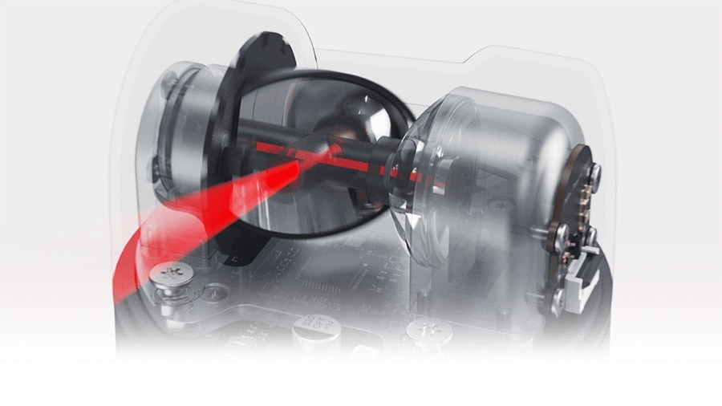
Unitree L2 · our pick
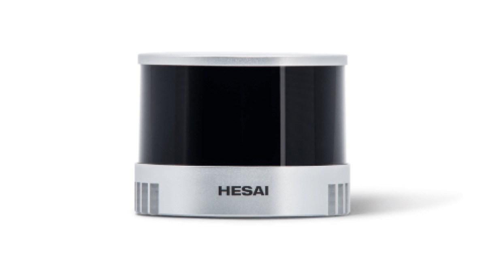
Hesai XT16 / XT32
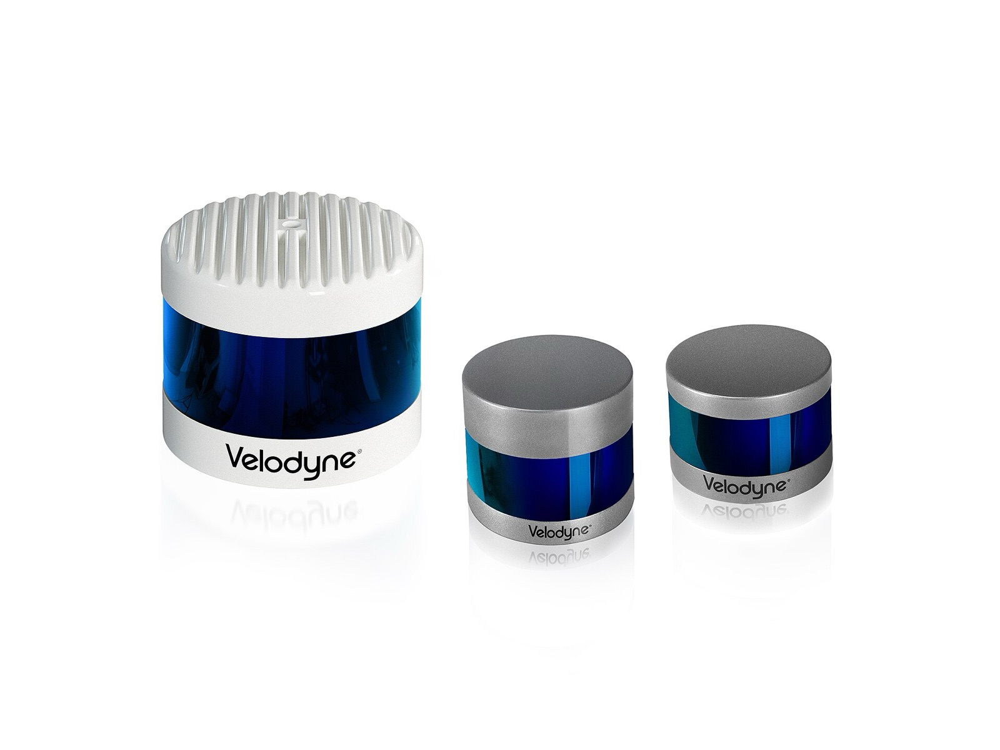
Velodyne: Alpha Prime, Ultra Puck, Puck
Sensor
Weight
Blind zone
Range
Built-in IMU
Price
Status
Unitree L2 (our pick)
230 g
0.05 m
30 m
Yes
$419
Current
Livox Mid-360
265 g
0.1 m
—
Yes
$979
Current
Hesai XT16
~800 g
0.05 m
—
Unconfirmed
~$2,000–3,300
Current
Velodyne VLP-16
830 g
~0.9 m
100 m
No
~$300–500 used
Discontinued 2025
The parts
Component reference
Shopping list
Bill of materials
Owned parts cost nothing more. Tick options to see the total. Prices are ranges from the research; the total uses the middle of each range est. Lines marked TBD were not priced in the research and are excluded until quoted.
Total to spend
$0
Owned$0
Core add-ons$0
Capture kit + upgrades ticked$0
Items priced TBD (not in total)6
Before tax and shipping. Dealer prices change often; check before ordering.
Read before buying
Risks and sources
What could go wrong
Developer access on the X is unproven. No one has published SDK or joint control on a Go2 X. If step 1 fails, we're limited to walk/turn/stand commands over Wi-Fi. That still covers mapping, navigation and a stop-then-grab arm.
Firmware updates break drivers. Versions 1.1.7 and 1.1.15 both broke community tools. Save the robot's key, then keep it offline.
Security. Bluetooth root exploit (UniPwn), an unauthenticated DDS bus (CVE-2026-27509), and telemetry to servers in China. Use an isolated network, Bluetooth off, no SIM.
Warranty. Fitting accessories is a modification and can void the 12-month warranty. Keep everything bolt-on and reversible.
Heat and weight. A 3.4 kg arm overheated a Go2's leg motors in 5–10 minutes in Stanford's tests. Log motor temperatures from the first walk.
US rules. The FCC's July 2026 Covered List blocks new foreign robot models but not existing ones. Our X stays legal to use.